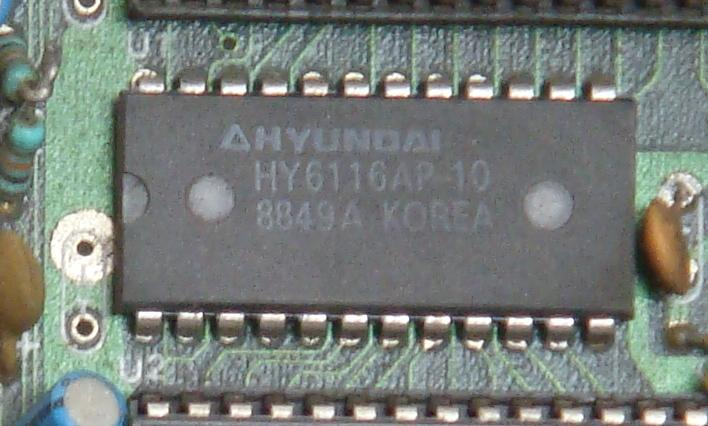
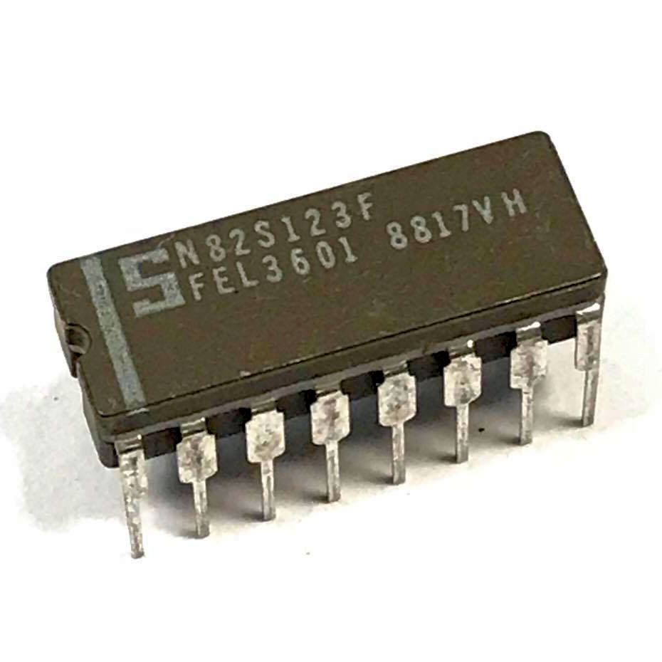
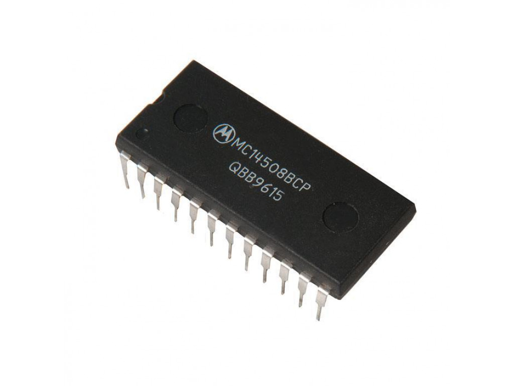
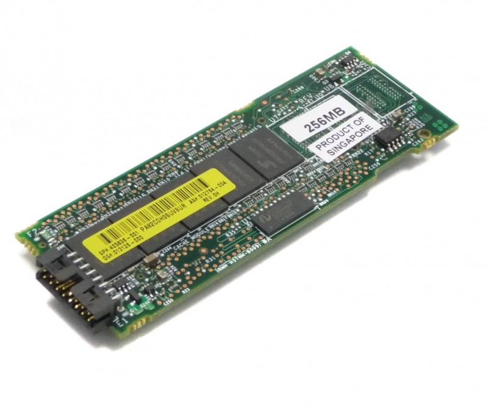
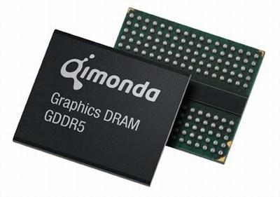

Внутренняя память
Данный раздел сайта посвящен внутренней памяти компьютера и работе с ней.
Введение
Внутренняя память – это запоминающее устройство, напрямую связанное с процессором и предназначенное для хранения выполняемых программ и данных, непосредственно участвующих в вычислениях. Обращение к внутренней памяти ПК осуществляется с высоким быстродействием, но она имеет ограниченный объем, определяемый системой адресации машины. Информация во внутренней памяти не сохраняется при выключении питания.
Основными характеристиками микросхем памяти различных типов являются:
- объем;
- разрядность;
- быстродействие;
- временная диаграмма (циклограмма).
Объем установленной в компьютере оперативной памяти определяет, с каким программным обеспечением можно на нем работать. При недостаточном объеме оперативной памяти многие программы либо не будут работать совсем, либо будут работать крайне медленно.
Внутренняя память в свою очередь также различается по типам:
- ОЗУ (оперативное запоминающие устройство);
- ПЗУ (постоянное запоминающие устройство);
- CMOS-память;
- Кэш-память;
- Видеопамять.
Рассмотрим каждый из типов подробнее.
Оперативная память или ОЗУ
Оперативная память, или оперативное запоминающее устройство (ОЗУ) по объему составляющая большую часть внутренней памяти, служит для приема, хранения и выдачи информации. При выключении питания содержимое оперативной памяти в большинстве случаев теряется. Эта память называется оперативной, поскольку является самой быстродействующей запоминающей системой компьютера и работает так быстро, что процессору практически не приходится ждать при чтении данных из памяти или записи в нее. Оперативная память обозначается RAM (Random Access Memory – память с произвольным доступом). Различают динамическую (DRAM) и статическую (SRAM) память.
DRAM память

Сверху вниз: DIP, SIPP,
SIMM (30-контактный),
SIMM (72-контактный),
DIMM (168-контактный),
DIMM (184-контактный)
В большинстве систем оперативной памяти современных ПК используется динамическая оперативная память или DRAM (Dynamic Random Access Memory, динамическая оперативная память с произвольным доступом). Это тип памяти, содержимое которой может сохраняться только в том случае, если оно будет обновляться через короткие интервалы времени. Динамическому ОЗУ нужна регенерация.
Основное преимущество памяти этого типа состоит в том, что ее ячейки упакованы очень плотно, т.е. в небольшую микросхему можно упаковать много битов, а значит, на их основе можно построить память большой емкости. Ячейки памяти в микросхеме DRAM – это крошечные конденсаторы, которые удерживают заряды. В настоящее время имеются микросхемы динамической оперативной памяти емкостью 16 Гбайт и больше. Это означает, что подобные микросхемы содержат миллиарды транзисторов. В микросхеме памяти все транзисторы и конденсаторы размещаются последователь но, обычно в узлах квадратной решетки, в виде очень простых, периодически повторяющихся структур.
Важным элементом памяти типа DRAM является чувствительный усилитель-компаратор, подключённый к каждому из столбцов «прямоугольника». При чтении данных из памяти усилитель-компаратор реагирует на слабый поток электронов, устремившихся через открытые транзисторы с обкладок конденсаторов, и считывает одну строку целиком. Чтение и запись выполняются построчно; обмен данными с отдельно взятой ячейкой невозможен.
Достоинтсва и недостатки DRAM представлены в таблице.
| Достоинства | Недостатки |
|---|---|
| Малое число элементов на одну ячейку, откуда высокая плотность упаковки, большой объем памяти на одном кристалле | Необходимость периодического перезаряда элементов памяти, а это: уменьшает быстродействие, усложняет схемы обслуживания памяти |
| Малое потребление мощности | При отсутствии питания стирается вся информация |
Типы динамической памяти с произвольным доступом (DRAM) представлены в таблице.
| Достоинства | Недостатки |
|---|---|
| Асинхронная | FPM RAM; EDO RAM |
| Синхронная | SDRAM; DDR SDRAM; Mobile DDR (LPDDR); DDR2 SDRAM; DDR3 SDRAM; DDR4 SDRAM; DDR5 SDRAM; HBM; HMC |
| Графическая | VRAM; WRAM; MDRAM; SGRAM; GDDR; GDDR2; GDDR3; GDDR4; GDDR5; GDDR6 |
| Rambus | RDRAM; XDR DRAM; XDR2 DRAM |
| Модули памяти | SIPP; SIMM; DIMM; SO-DIMM; UniDIMM; RIMM |
DRAM применяется для производства модулей оперативной памяти. Принцип работы динамической памяти представлен в данном видео:
SRAM память

Статическая память с произвольным доступом (SRAM, static random access memory) – полупроводниковая оперативная память, в которой каждый двоичный или троичный разряд хранится в схеме с положительной обратной связью, позволяющей поддерживать состояние без регенерации, необходимой в динамической памяти. Тем не менее сохранять данные без перезаписи SRAM может, только пока есть питание, то есть SRAM остается энергозависимым типом памяти.
Как и в динамической памяти, в статической, триггеры объединяются в единую матрицу, состоящую из строк (row) и столбцов (column), последние из которых так же называются битами (bit).
В отличии от ячейки динамической памяти, для управления которой достаточно всего одного ключевого транзистора, ячейка статической памяти управляется как минимум двумя. Это не покажется удивительным, если вспомнить, что триггер, в отличии от конденсатора, имеет раздельные входы для записи логического нуля и единицы соответственно. Таким образом, на ячейку статической памяти расходуется целых шесть транзисторов - четыре идут, собственно, на сам триггер и еще два - на управляющие "защелки".
Причем, шесть транзисторов на ячейку – это еще не предел! Существуют и более сложные конструкции! Основной недостаток шести транзисторной ячейки заключается в том, что в каждый момент времени может обрабатываться всего лишь одна строка матрицы памяти. Параллельное чтение ячеек, расположенных в различных строках одного и того же банка невозможно, равно как невозможно и чтение одной ячейки одновременно с записью другой.
Достоинтсва и недостатки SRAM представлены в таблице.
| Достоинства | Недостатки |
|---|---|
| Быстрый доступ. SRAM – это действительно память произвольного доступа, доступ к любой ячейке памяти в любой момент занимает одно и то же время | Невысокая плотность записи (шесть-восемь элементов на бит вместо двух у DRAM) |
| Простая схемотехника – SRAM не требуются сложные контроллеры | Дороговизна килобайта памяти |
| Возможны очень низкие частоты синхронизации, вплоть до полной остановки синхроимпульсов | Особенность: непредсказуемое (произвольное) содержимое памяти после включения питания |
| Rambus | RDRAM; XDR DRAM; XDR2 DRAM |
Существует как минимум три типа статической памяти: асинхронная, синхронная и конвейерная. Про них можно почитать на данном сайте
.SRAM применяется в микроконтроллерах и ПЛИС, в которых объём ОЗУ невелик (единицы килобайт), зато нужны низкое энергопотребление (за счёт отсутствия сложного контроллера динамической памяти), предсказываемое с точностью до такта время работы подпрограмм и отладка прямо на устройстве.
В устройствах с большим объёмом ОЗУ рабочая память выполняется как DRAM. SRAM же применяется для регистров и кэш-памяти.
Так же рекомендуем ознакомиться с данным видео:
Постоянная память или ПЗУ

Первую свою команду процессор находит в памяти, которая в отличие от магнитных и оптических дисков является внутренней и в отличие от ОЗУ, энергонезависимой, т.е. хранит информацию постоянно, даже после выключения компьютера. Такая память называется ПЗУ (ROM – Read Only Memory, память только для чтения) – постоянное запоминающее устройство. Микросхема ПЗУ устанавливается так, что ее память занимает нужные адреса. Поэтому процессор, когда начинает свою работу, в постоянную память, заготовленную для него заранее. Из ПЗУ можно только читать информацию. хранит информацию постоянно, даже после выключения компьютера. В постоянной памяти хранятся программы, необходимые для запуска компьютера и «зашитые» в нее при изготовлении. Основное назначение этих программ состоит в том, чтобы проверить состав и работоспособной компьютерной системы сразу после включения.
Для упрощения разработки новых устройств, основанных на ПЗУ, были выпущены программируемые ПЗУ, которые можно было программировать в условиях эксплуатации. Следующая разработка этой линии – стираемое программируемое ПЗУ, которое можно не только программировать в условиях эксплуатации, но и стирать с него информацию, подвергнув его воздействию сильного ультрафиолетового света в течение 15 минут. Следующий этап – электронно-перепрограммируемое ПЗУ, с которого можно стирать информацию, прилагая к нему импульсы, и которое не нужно для этого помещать в специальную камеру, чтобы подвергнуть воздействию ультрафиолетовых лучей. Кроме того, чтобы перепрограммировать данное устройство, его не нужно вставлять в специальный аппарат для программирования, в отличие от стираемого программируемого ПЗУ.
Постоянные запоминающие устройства стали находить применение в технике задолго до появления ЭВМ и электронных приборов. В частности, одним из первых типов ПЗУ был кулачковый валик, применявшийся в шарманках, музыкальных шкатулках, часах с боем. С развитием электронной техники и ЭВМ возникла необходимость в быстродействующих ПЗУ. В эпоху вакуумной электроники находили применение ПЗУ на основе потенциалоскопов, моноскопов, лучевых ламп. В ЭВМ на базе транзисторов в качестве ПЗУ небольшой ёмкости широко использовались штепсельные матрицы. При необходимости хранения больших объёмов данных (для ЭВМ первых поколений — несколько десятков килобайт) применялись ПЗУ на базе ферритовых колец (не следует путать их с похожими типами ОЗУ). Именно от этих типов ПЗУ и берёт своё начало термин «прошивка» — логическое состояние ячейки задавалось направлением навивки провода, охватывающего кольцо. Поскольку тонкий провод требовалось протягивать через цепочку ферритовых колец для выполнения этой операции применялись металлические иглы, аналогичные швейным. Да и сама операция наполнения ПЗУ информацией напоминала процесс шитья.
Применение постоянной памяти представлно на данном видео:
CMOS-память

Texas Instruments PDIP-24 MC14508
CMOS-память – энергозависимая, перезаписываемая память, которая при своей работе, однако, почти не потребляет энергии. CMOS переводится как comрlementary metal oxode semiconductor – «комплиментарный металл–оксид–полупроводниковый». В CMOS-памяти компьютера находятся важные для его работы настройки, которые пользователь может менять для оптимизации работы компьютера.В частности, здесь хранятся текущая дата и время, параметры жестких дисков и некоторых других устройств. Питается эта память от небольшого аккумулятора, встроенного в материнскую плату.
Для изготовления затворов в CMOS-ячейках на ранних этапах применялся алюминий. Позже, в связи с появлением так называемой самосовмещённой технологии, которая предусматривала использование затвора не только как конструктивного элемента, но одновременно как маски при получении сток-истоковых областей, в качестве затвора стали применять поликристаллический кремний.
Компьютеры с ISA шиной (содержащие процессоры вплоть до i80286), имели минимум настроек. Часто они вполне нормально работали в своей основной конфигурации. Ситуация изменилась после появления на компьютерах памяти более чем 16 Мбайт, IDE-контроллеров и PCI-шины. Как выяснилось, в большинстве случаев стандартная настройка материнской платы стала неприменимой. Для сохранения настроек пользователя их стали хранить в CMOS-памяти.
Иногда содержимое CMOS-памяти разрушается. Это возможно в следующих случаях:
- воздействие вируса. При своей работе вирус может специально внедряться в CMOS-память, чтобы обеспечивать лучшие условия для его распространения либо специально вывести компьютер из строя;
- неисправность аккумулятора. В некоторых случаях аккумулятор CMOS-памяти может разряжаться (от времени или короткого замыкания на плате). В этом случае содержимое CMOS может разрушиться не сразу, а по прошествии двух-трех суток;
- скачок напряжения при работе с CMOS. В этом случае последствия непредсказуемы.
Для восстановления параметров CMOS-памяти после ее сброса существуют опции «стандартной» и «безопасной» настройки этой памяти на материнской плате. Пользователю в этом случае придется восстанавливать не все, а только часть параметров. Опции «стандартной» и «безопасной» настройки хранятся в ПЗУ и изменить их невозможно.
Кэш-память

Кэш (англ. cache), или сверхоперативная память – очень быстрое ЗУ небольшого объёма, которое используется при обмене данными между микропроцессором и оперативной памятью для компенсации разницы в скорости обработки информации процессором и несколько менее быстродействующей оперативной памятью.
Кэш-памятью управляет специальное устройство – контроллер, который, анализируя выполняемую программу, пытается предвидеть, какие данные и команды вероятнее всего понадобятся в ближайшее время процессору, и подкачивает их в кэш-память. При этом возможны как "попадания", так и "промахи". Когда клиент кэша (ЦПУ, веб-браузер, операционная система) обращается к данным, прежде всего исследуется кэш. Если в кэше найдена запись с идентификатором, совпадающим с идентификатором затребованного элемента данных, то используются элементы данных в кэше. Такой случай называется попаданием кэша. Если в кэше не найдена запись, содержащая затребованный элемент данных, то он читается из основной памяти в кэш, и становится доступным для последующих обращений. Такой случай называется промахом кэша. Процент обращений к кэшу, когда в нём найден результат, называется уровнем попаданий, или коэффициентом попаданий в кэш.
Когда процессор первый раз обращается к ячейке памяти, ее содержимое параллельно копируется в кэш, и в случае повторного обращения в скором времени может быть с гораздо большей скоростью выбрано из кэша. Кэш-память напрямую влияет на скорость вычислений и помогает процессору работать с более равномерной загрузкой.
Кэш состоит из набора записей. Каждая запись ассоциирована с элементом данных или блоком данных (небольшой части данных), которая является копией элемента данных в основной памяти. Каждая запись имеет идентификатор, часто называемый тегом, определяющий соответствие между элементами данных в кэше и их копиями в основной памяти.
Кэш-память реализуется на микросхемах статической памяти SRAM (Static RAM), более быстродействующих, дорогих и малоёмких, чем DRAM. Современные микропроцессоры имеют встроенную кэш-память, так называемый кэш первого уровня размером до 384 Кбайт. Кроме того, на системной плате компьютера может быть установлен кэш второго уровня ёмкостью до 12 Мб. Но новинки имеют кэш-память емкостью до 32 Мб.
Видеопамять

Видеопамять – это внутренняя оперативная память, отведённая для хранения данных, которые используются для формирования изображения на экране монитора. При этом в видеопамяти может содержаться как непосредственно растровый образ изображения (экранный кадр), так и отдельные фрагменты как в растровой (текстуры), так и в векторной (многоугольники, в частности треугольники) формах. Эта память обычно входит в состав видеоконтроллера – электронной схемы, управляющей выводом изображения на экран. Он обычно выполняется в виде специальной платы, вставляемой в разъем системной шины компьютера, но на многих компьютерах он входит в состав системной (материнской) платы.
При изготовлении видеокарт уже достаточно давно используется память GDDR3. На смену ей пришла GDDR4, которая имеет более высокую пропускную способность, чем GDDR3; однако GDDR4 не получила широкого распространения вследствие плохого соотношения «Цена-производительность» и ограниченно использовалась лишь в некоторых видеокартах верхнего ценового сегмента (например Radeon X1950XTX, HD 2900 XT, HD3870). Далее появилась память GDDR5, которая по состоянию на 2012 год является наиболее массовой, GDDR3 используется в бюджетном сегменте. В 2018 году в топовых видеокартах устанавливается память типа HBM и HBM2, GDDR5X и GDDR6.
Латентность – это время выборки данных из памяти, чем меньше данный параметр, тем лучше, так как не будут наблюдаться значительные задержки при обращении к памяти. У современных видеокарт латентность схем памяти составляет менее 1-2 нс.
Также видеопамять отличается от «обычной» системной ОЗУ более жёсткими требованиями к ширине шины.
Графическая шина данных – это магистраль, связывающая графический процессор и память видеокарт.
Шина данных видеопамяти бывает:
- 32-битной;
- 64-битной;
- 128-битной;
- 192-битной (нестандартная шина памяти);
- 256-битной;
- 320-битной (нестандартная шина памяти);
- 384-битной (нестандартная шина памяти);
- 448-битной (нестандартная шина памяти);
- 512-битной;
- 768-битной (нестандартная шина памяти);
- 896-битной (нестандартная шина памяти);
- 1024-битной;
- 2048-битной (только HBM-память);
- 3072-битной (только HBM2-память);
- 4096-битной (только HBM2-память).
Имеет значение соотношение количества памяти, её типа и ширины шины данных: 512 МБ DDR2, при ширине шины данных в 128 бит, будет работать медленнее и гораздо менее эффективно, чем 256 МБ GDDR3 при ширине шины в 128 бит и т.п. По понятным причинам, 256 МБ GDDR3 с шириной шины 256 бит лучше, чем 256 МБ GDDR3 с шириной шины в 128 бит и т.п.
Видеопамять обычно имеет объем 256 Кбайт, на некоторых моделях видеоадаптера объем видеопамяти может быть увеличен до 512 Мбайт.